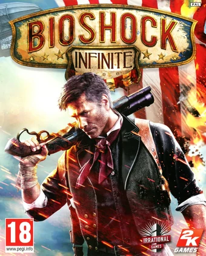

En esta seccion hablare sobre los tre hobbies que practico que son los siguientes:
Empezaremos con mi primer hobbie el cual es Jugar videojuegos, este hobbie es uno de los que llevo practicando mucho tiempo por que desde que era niño jugaba videojuegos en mi computadora, los juegos con los que empeze a jugar eran El KOF 2002, el metal slug(1,2,3,4,5,X) entre otros juegos los cuales empeze a juagar en el emulador de neorage,
Despues empeze con mi primer juego FPS el cual fue Halo me gusto mucho el juego de halo por lo cual lo e jugado muchas veces, tambien jugue el GTA San Andreas en un play station 2 que era de mi primo y lo daño mojandolo,
Despues de un tiempo encontre el videojuego de Midnight Club el cual fue un juego que me metio en el genero de juegos de carreras, los juegos de carrreras que e jugado son, Ford racing 3, Midnight Club 2, Need for Speed Most wanted(NFS), NFS Carbon, NFS Hot persuit,NFS The run,NFS Underground 1 y 2, F1 y burnout paradise,
Algunos de los FPS que e jugado son Call of duty 1 y 2, call of duty World of War, Call of duty Modern warfare 1, 2 y 3, Call of duty Black ops 1 y 2, Bioshock 1 e Infinite,la caida del halcon negro entre otros,

Tambien me gustan los juegos de terror y Zombies los cuales e jugado el resident evil 4 y 5, el silent hill 3 y el homecoming, El amnesia 1 y el outlast son los juegos de terror que recuerdo que e jugado hasta ahora
Mi segundo hobbie que pratico es el de ver anime este hobbie lo empeze en el 2014 cuando una ex me dijo que mirara el aime de tokyo ghoul,el cual me intereso solo la primer temporada y de ahi empeze a ver anime,
El segundo anime que empeze a ver fue el de Corpse party el scual es una anime gore basado en un Videojuego del mismo nombre,

Ya para introducirme completamente en el mundo del anime mire mi tercer anime el cual fue School days el cual empezo con un genero muy drama pero conforme vas viendo te envuelve la historia, ademas de que tiene muchos finales alternativos,
Una vez dentro del mundo del anime empeze a ver animes del genero Gore y ahi vi los animes de MIrai nikki, Blood C, Higurashi no naku koro ni y un clasico Elfen lied los cuales me gustaron mucho excepto el final de mirai nikki,
No paso mucho y empece a ver animes de genero sobre natural que son Hellsing y la Death note son muy pocos animes los que e visto de este genero,
De ahi empeze a ver isekais (personas que viajan a otro mundo) donde me vi el anime de konosuba,Re zero, Tate no Yuusha no Nariagari,overlord,youjo senki entre otros,
Los animes de comedia que he visto son Imouto Umaru-chan,MM!,Danshi koko,chunibyou demo koi ga shitai,Prison School,netoge no yome,nisekoi y la lista es muy larga,
E visto muchos animes durante 6 años y aun que ya no es algo que hago con tanta frecuencia es un buen hobbie para relajarte y desestresarte es un buen hobbie para pasar el rato.
Uno de los hobies que practico mas es el de escuchar musica y esto lo practico cuando estoy haciendo algun trabajo conforme va pasando el tiempo mis gustos musicales fueron cambiando uno de los generos de musocaq que me gustan es el Rock, e eschuchado AC/DC,Metallica,Pink floyd,Led zeppelin,KISS,Avenged Sevenfold, system of a down, entre otras bandas empeze a escuchar rock por que a mis padres les gusta escuchar pink floyd y System of a down, por eso es que el genero rock es uno de los generos de musica que escucho,

Otro de los generos musicales que escuho es electronica y Dubstep este gusto empezo cuando tenia la edad de 12 - 13 años cuando las canciones electrocicas se volvieron populares , el dubstep lo empeze a escuchar por un video que vi donde salia una cancion dubstep la cual era Bangarang de Skrillex y me gusto, deje de escuchar electronica y empece a escuchar dubstep pero conforme va pasando el tiempo ya es menos el dubstep que escucho,
Uno de los generos que tambien escucho pero no es siempre son las canciones Norteñas como los huracanes del norte y los tigres del norte, este genero tambien lo escucho por que mis padres siempre ponen canciones de ellos y conforme fue pasando el tiempo me acostumbre y me terminaron gustando una de las canciones que me gustan de los huracanes del norte es la de el Hombre de negro, donde dice que un hombre contrata unos mariachis por que anda muy feliz pero que sus familiares andan tristes y quieren que festejen y cuando las mariachis van ven que estan en un velorio, y ven el ataud y se asustan por que el señor que los contrato fue el muerto.
El hobbie con el que llevo mas tiempo seria el de escuchar musica ya que desde siempre e escuchado musica para poder relajarme y tranquilizarme y poder trabajar mejor.
Pagina creada por Antonio Nuñez.